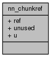

My Project
Main Page
Classes
Files
Class List
Class Index
Class Members
Public Attributes
|
List of all members
nn_chunkref Struct Reference
#include <
chunkref.h
>
Collaboration diagram for nn_chunkref:

Public Attributes
union {
uint8_t
ref
[
NN_CHUNKREF_MAX
]
void *
unused
}
u
Member Data Documentation
uint8_t nn_chunkref::ref[
NN_CHUNKREF_MAX
]
union { ... } nn_chunkref::u
void* nn_chunkref::unused
The documentation for this struct was generated from the following file:
src/utils/
chunkref.h
Generated by
1.8.11
 1.8.11
1.8.11